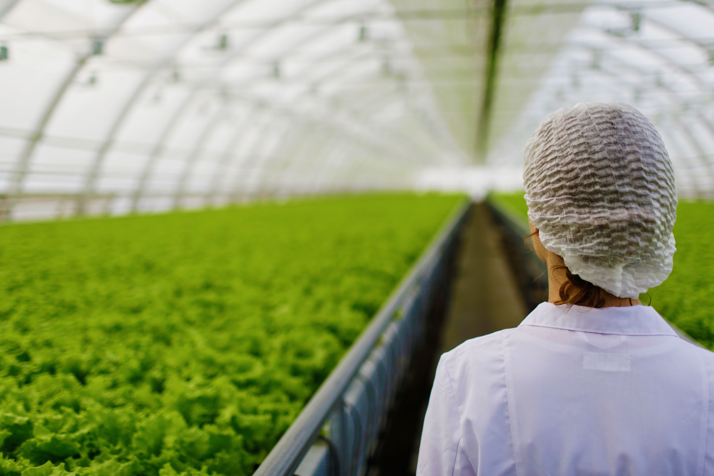

Department of Agricultural Technology

The Department of Agricultural Technology conducts the academic program leading to the Bachelor of Biosystems Technology Honours in Agriculture. The aim of this degree program is to educate students in the fundamentals of biological sciences, mathematics, physical sciences, and technology, balanced with the application of knowledge in Biosystems Technology to Agriculture. In this degree program, we explore and investigate interactions among soil, plants, animals, environment, climate, and humans in order to achieve sustainable agriculture. The curriculum is developed with the objective of imparting knowledge that will enable students to develop skills and competencies for achieving the goals of sustainable agriculture. Students graduating with a Bachelor of Biosystems Technology Honours in Agriculture (BBST) from the University of Colombo, will be equipped with skills and competencies for solving problems; Related to food security in Sri Lanka especially, to produce safe, high-quality food, meeting demands and needs of a growing population in an atmosphere when agriculture is challenged by climate change; Associated with protecting natural resources, the efficient use of nonrenewable resources, converting waste materials into valuable resources and minimizing the degradation of air, soil and water quality during agricultural practices. In addition, students graduating with a Bachelor of Biosystems Technology Honours in Agriculture will be educated and trained on awareness, and the importance of economics and safe agricultural practices with lower environmental impact when engaging in agriculture.
CONTACT US
Faculty of Technology, University of Colombo, Mahenwatta, Pitipana, Homagama, Sri Lanka.
Dean Office
+94112078607
dean@tec.cmb.ac.lk